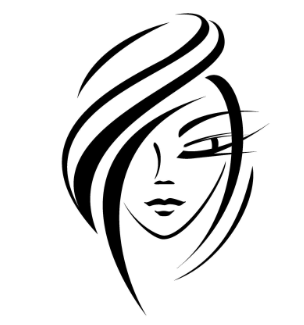

RETRO ROCKS
FASHION FADES, ONLY STYLE REMAINS THE SAME
When it comes to fashion,
you can never go wrong by looking at the past and
checking out vintage outfits.
Retro or vintage clothing will never go out of style
So, if you are looking for fashion inspiration,you can check out these vintage fashoin tips to try from every decade
A common concern I hear from people who have yet to take the plunge into the world of vintage clothing is that, if they do, they will look like they are wearing a costume.
Here are 3 tips for wearing vintage while avoiding exactly that.
Whenever you're in the mood for fashion tricks, outfit ideas, industry news, celebrity street style, or simply want to know the latest styles to shop, you've come to the right place. We won't just tell you about the hottest trends — from jeans, to shoes, to jackets — we'll show you how to get the look
MOMMY JEANS
Mommy jeans trend is again coming in existence.
Wearing mommy jeans with casual tops can give you a elegant look.
Mommy jeans are a perfect fit for all seasons.
U can also try it with jackets,the look will be awesome
CONTEMPRORARY HAIR AND MAKEUP
>
Chances are, unless you are dedicating hours to recreating precise vintage hairstyles and makeup application, your hair and makeup are already going to look comparatively modern. Simplicity in hair and makeup is a tried and true way of grounding a vintage outfit, such as wearing a 1950's dress with a slicked back ballerina bun or pairing an Edwardian blouse with a subtly smoky eye. Even contemporary versions of classic hairstyles will update a look while still giving a nod to the appropriate era; modernized 1940's loose waves -- which have been a Hollywood favorite for the past couple of years -- are a great example.
MIXING ERAS
Even when wearing head-to-toe vintage, accessories included, it is possible to accessorize in ways that make your outfit seem more relevant. Mixing eras can, surprisingly, have the same effect as blending new and vintage pieces. Unexpected pops of vibrant color, surprising combinations of textiles and silhouettes and layers of contrasting patterns always serve to make an outfit appear both uniquely modern and totally timeless. In fact, mixing eras may just be the most fun and exciting way to wear vintage!
The above are just a few of the ways to wear vintage without looking like you're wearing a costume -- truth be told, the possibilities really are endless (although, again, there's nothing wrong with dressing theatrically. YOU DO YOU, guys! Always!) And just as wearing vintage is a way to ensure that your clothing is entirely unique, it is also a way to help the environment by conserving resources, support small businesses by shopping at vintage shops and websites and to deepen your resources for expressing your own creativity and unique spirit. Adding vintage to your wardrobe is like adding more paint colors to your life's palette, and as cheesy as that may sound, those who wear vintage know exactly what I mean.